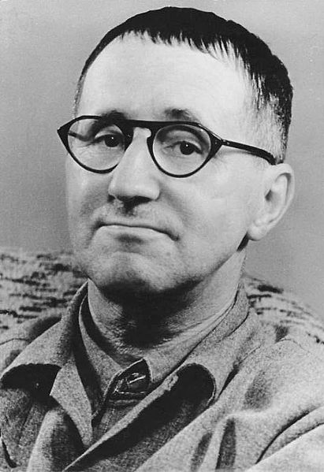

Berthold Brecht [1898-1956]
Berthold Brecht [1898-1956] đến Munich năm 1920 và tại đây vào năm 1922 vở kịch đầu tiên của ông được đưa lên sân khấu, vở Những chiếc trống trong đêm, mang phong cách biểu hiện và vô chính phủ. Cùng năm đó ông hoàn thành vở kịch Baal. Hai vở này mang lại cho ông giải thưởng Kleist. Năm 1924 Brecht đến Berlin và làm việc một thời gian tại nhà hát Deutsche Theater với cương vị chỉ đạo nghệ thuật. Vở Three penny Opera (Opera ba xu), viết chung với nhà soạn nhạc Kurt Weill, vạch mặt trò đạo đức giả của giai cấp tư sản. Tác phẩm được trình diễn ở Berlin hơn 250 lần trong năm 1929, tiêu biểu cho thành công lớn lao nhất của ông trong giai đoạn sáng tạo ban đầu. Những buổi ra mắt của vở Opera viết chung của Brecht/Weill Sự hưng vong của thành phố Mahagonny đã kéo theo những xì-căng-đan do những người Quốc xã gây ra. Ba năm sau, Brecht bỏ trốn khỏi nước Đức Quốc xã, lúc đầu ở Đan Mạch, rồi qua Thụy Điển, Phần Lan, Nga đến nước Mỹ. Trong thời kỳ lưu vong ông xuất bản nhiều thơ và kịch. Tác phẩm chính thời kỳ này, vở kịch Bà mẹ can trường và Những đứa con ra mắt công chúng năm 1941. Năm 1948, Brecht trở về Đông Berlin thuộc CHDC Đức, và năm sau đó lập ra đoàn kịch Berliner. Nhưng vở kịch nổi tiếng nhất của ông thời hậu chiến là Ông Puntila và người tay chân Matti, Sự thăng tiến khả kháng của Arturo Uli và Vòng phấn Cápca.
Nhà thơ có chiếc mặt nạ thần chết được cởi ra, treo trên tường, và ghi vào nhật ký: “Tôi biết rằng mình sắp trở thành tác gia kinh điển”. Nhà thơ này bấy giờ mới 23 tuổi có tên là Eugen Berthold Friederich Brecht. Ông sống cùng với cha mẹ mình ở Augsburg và là người cầm đầu của “bè lũ suy đồi”.
Khi các bạn của mình đang vẫy vùng bơi lội dưới sông thì Brecht, anh chàng sợ nước, ngồi viết bài thơ Bơi trên những sông hồ. Khi họ trần truồng trèo trên cây, Brecht ngắm họ và làm ra bài thơ Lúc trèo cây. Và ông tuyên bố: “Tôi muốn mọi cái được trao cho mình, cái quyền lực đối với muông thú, và tôi biện minh cho đòi hỏi này bởi việc rằng tôi chỉ sống một lần thôi”.
Thật là trường hợp điển hình của chứng hoang tưởng tự đại, vốn chẳng có gì là không bình thường đối với những chàng trai cảm thấy mình có duyên nợ với Nàng Thơ.
Nhưng chỉ mỗi anh chàng Brecht này thôi, người mang cái tên Bert nhưng sau đấy đổi thành Bertholt, mới thực sự là nhà thơ. Những vần thơ kể trên đã trở thành kinh điển, cùng với tên tuổi của tác giả. Tập thơ mà Brecht xuất bản đầu năm 1927 được gọi là Hauspostille (Cẩm nang của lòng mộ đạo) mượn lời của Martin Luther. Đấy là những khúc ca tuyệt vời, chẳng hạn bài thơ Huyền thoại về Người tử sĩ là sự tố cáo chiến tranh hết sức cay chua qua những vần thơ súc tích mà một số câu đã trở thành cách ngôn.
Tuy nhiên Brecht chỉ coi thơ ông thuần túy là chuyện đời tư. Ông nhằm vào những thứ khác, muốn ôm lấy tất cả thế giới. Muốn có được những hình ảnh lớn lao kỳ vĩ thì cần có sân khấu. Vì thế trong một thời gian ngắn nhất ông viết ra ba vở kịch: Baal, một loạt những màn điên đảo về một chàng điên; Trong đầm lầy, một cuộc chiến để tồn tại, và Những chiếc trống ban đêm, một trong những vở kịch đầu tay được trình diễn năm 1922. Với vở này, nhà phê bình sân khấu Herbert Ihering thốt lên: “Chàng trai 24 tuổi Bert Brecht đã làm thay đổi bộ mặt nghệ thuật của nước Đức sau một đêm”.
Ngay sau đấy, luân phiên sống ở Berlin và Munich, ông lao vào cuộc sống xã hội như là một kẻ chinh phục, bút chiến với hầu hết các cây bút đương thời, đặc biệt với Rainer Maria Rilke, Stefan George, Franz Werfel và Thomas Mann. Thỉnh thoảng ông bị kiệt sức phải vào bệnh viện do ăn uống thiếu thốn và những bệnh về tuần hoàn máu. Nhưng chẳng bao lâu người ta lại thấy Brecht trong đám nhà thể thao tiếng tăm, đặc biệt là các tay quyền Anh nhà nghề. Năm 1926, ông viết: “Nền thể thao lớn bắt đầu khi nó không còn lành mạnh nữa”. Ông còn là một tay nghiện lái ôtô.
Ông kết hôn lần đầu với Marianne Zoff rồi với Helene Weigel, người mà nhờ ông đã tạo dựng được một sự nghiệp diễn viên lớn lao. Họ có những đứa con nhưng luôn luôn lại có những người tình để vui thú. Brecht tiêu biểu cho tinh thần của những năm 20. Từ lúc thành danh ở Berlin, Brecht tiếp tục đi chinh phục đỉnh cao của danh vọng. Nhưng ông đã đạt tới đó ra sao? Chắc chắn không phải bằng cách đoạt giải Nobel văn chương, một ván bạc hàng năm mà Brecht luôn hỏng ăn. Hay là do tuyên bố mình là một tác giả kinh điển và dần dần thuyết phục được mọi người thừa nhận? Đâu có. Sau khi ông chết năm 1956, Max Frisch thừa nhận ông có cái “vô tích sự vang dội” của một tác giả cổ điển - tức là được ca ngợi nhưng ít có ai đọc, được tôn vinh nhưng tác phẩm hiếm khi được trình diễn. Tuy vậy cái thước đo duy nhất của danh vọng là cái năng lượng mà bạn đọc hay những diễn viên thường xuyên nỗ lực để học ra điều mới mẻ về một tác giả, hoặc là diễn xuất theo những gì đã biết rõ. Nếu trong tiến trình đó họ nói lên niềm tin rằng cuộc đời và tác phẩm của ông đòi hỏi phải thường xuyên suy ngẫm và tìm tòi cẩn trọng thì đỉnh cao danh vọng ông đã đạt tới, và chỉ sau khi chết. Từ giữa thập kỷ 60, các trường đại học, các nhà xuất bản và các nhà hát kịch ở phương Tây bận bịu với việc khai thác kho tàng tác phẩm của ông. Bất kỳ ai có tham vọng trong lĩnh vực hàn lâm hay nghệ thuật không thể nào lại làm ngơ ông đi, một bậc thầy vĩ đại. Những cuộc chiến trí tuệ về những sứ mệnh xã hội của nghệ thuật, về chủ nghĩa hiện thực, chủ nghĩa biểu hiện và chủ nghĩa tiền phong mà bản thân ông tham gia với nhà lý luận mác-xít Georg Lukacs trong những năm 30, hơn bao giờ hết, đã là chủ đề trong các trào lưu sinh viên. Một lần nữa, con người duy vật phi giáo điều Bertholt Brecht đã xuất hiện là kẻ chiến thắng trong những trận chiến đó.
Tinh thần căn bản của một thế kỷ vừa qua của lịch sử văn học Đức là gì, nếu không phải là vượt lên trên những mốt thời thượng về trí thức? Không ai nghi ngờ gì, người con của một gia đình thị dân ở Augsburg này được xếp hạng cao trong văn học. Cùng với Franz Kafka và Thomas Mann, Brecht tạo thành chùm sao ba ngôi trên thiên đỉnh văn học Đức. Nếu Kafka giới thiệu thế kỷ XX với những hình ảnh X quang về tình trạng nội thể của nó và Thomas Mann dựng lên một tượng đài sử thi cho sự huy hoàng và diệt vong của cuộc sống tư sản, thì không giống bất kỳ tác giả nào khác trong thời đại chúng ta, Brecht đề xuất ra cái tiềm năng sản xuất và cái hiểm họa đáng kể nằm trong lòng nghệ thuật dấn thân về chính trị.
Không nghi ngờ gì, Brecht đã mang lại cho sân khấu những nhân vật lớn lao, như Anna Fierling, bà mẹ can trường… đi lang thang trong sự tàn phá của cuộc chiến tranh ba mươi năm, hay nhân vật Galileo, một phác họa tuyệt vời về quyền lực bộ máy nhà nước và sự bất lực của giới trí thức. Còn vở Opera ba xu đưa ra bức tranh toàn cảnh về nền cộng hòa Weimar và bản chất vĩnh hằng của con người.
Riêng “Brecht - nhà thơ” đã tỏ rõ thiên tài của mình trong suốt cả cuộc đời, và trở thành cốt lõi của nền thơ Đức. Hơn hai ngàn bài thơ của ông để lại cho hậu thế là một cuốn bách khoa về những gợi ý cho một cuộc sống tốt đẹp hơn, nguyên vẹn hơn và nhân ái hơn, và những bài thơ khiến cho ông trở thành nhà thơ về tình yêu không ai vượt qua của thế kỷ là điều không tránh khỏi. Cũng chả phải là sự trùng hợp ngẫu nhiên khi bài thơ ngắn nhất của ông lại là bài thơ tình. Nó chỉ có ba dòng nhưng nói lên tất cả, nhan đề là Những yếu đuối.
Người chẳng có gì
Ta có một
Ta đã yêu.